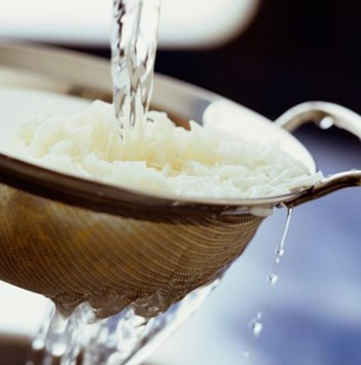

日常烹饪中，如果不注意，营养就会从指间溜走！例如，淘米的时候不宜超过三次，蔬菜忌先切后洗……这些烹饪技巧，你都注意到了吗？

做米饭时首先是要淘米，有些人喜欢把米淘好几遍，又搓又揉的，直到水里清凌凌才行，觉得这时候米洗干净了，可以下锅做饭了，不会不卫生了。其实这种做法是错的，淘米也有讲究。
米中含有很多维生素物质和无机盐，淘米次数过多，或者有人用热水淘，米中的B族维生素、无机盐和蛋白质这些营养物质就会淘掉三成多。用手使劲搓米，这种淘米的方法让米的营养物质流失得更多。正确的淘米方式只需要用水将米轻轻淘洗两次即可，不宜超过三次,不用反复地搓洗。